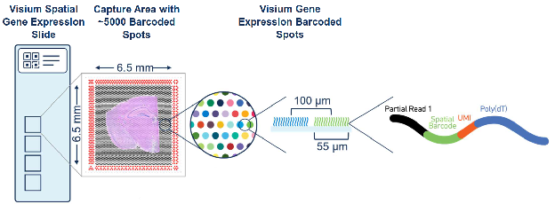
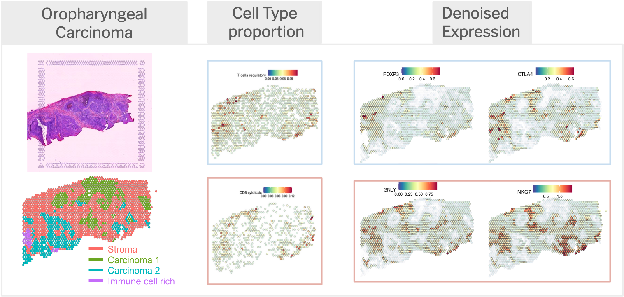

Cells are the basic building blocks of all living organisms. As biologists we are in a continuous endeavor to characterize and unravel how they come together to form and maintain complex tissue structures and organisms. Understanding the underlying molecular mechanisms ruling these systems is critical to understanding how cells communicate, interact, respond to stimuli, and evolve in steady-state and disease conditions (Wagner et al., 2016).
Single-cell RNA sequencing (scRNAseq) technologies have revolutionized our ability to understand cells. scRNAseq is an untargeted approach to profile individual cells at the whole transcriptome level. In 2009, Tang, et al. showed how an mRNA sequencing assay of mouse blastomeres increased transcript detection sensitivity, and enabled the identification of more than 1,700 previously unknown transcript isoforms2. Already, at this nascent stage, scRNAseq was showing its strengths and hinting at the powerful revolution about to come. Currently, there are many different approaches to generating scRNAseq data. All of them follow, broadly, the same basic steps: 1) single cell isolation and capture, 2) cell lysis and barcoding, 3) reverse transcription, 4) pre-amplification, and 5) library preparation and sequencing. For more detailed information on the technologies refer to established literature such as Svensson et al. 2018 and Mereu & Lafzi et al. 2020.
However, in order to fully understand a cell’s behavior and role in the tissue, it is critical to look beyond the cell in isolation. It is necessary to understand where it is located and how it is interacting with its neighbors. Ultimately, maintaining the spatial context is key to understanding tissue architecture of single cells in health and disease. However, single-cell analysis methods lose this spatial disposition in the cell dissociation step. The spatial neighborhood of a cell defines its interaction universe through juxtacrine and paracrine signaling, and determines which biological processes that cell will carry out. Bulk RNAseq and scRNAseq deliver the promise of transcriptomics at the tissue and single-cell level, but at the cost of dissociating cells and removing the spatial context. Therefore, technologies aimed at capturing mRNAs while retaining the spatial context have been developed for a more comprehensive analysis. One of the most popular spatial transcriptomics technologies used nowadays is Visium. Originally developed by Ståhl et al. in 2016 and commercialized by 10X Genomics in 2020 (Figure 1).

The Visium technology, allows the user to profile tissue sections 6.5mm x 6.5mm, using ~5,000 spots. These spots are 55µm in diameter, and therefore do not provide single cell resolution. For reference immune cells range from 8-20µm in diameters while epithelial cells can go up to 25µm. Therefore, these spots are believed to capture the mRNA from 1-10 cell and sometimes even more, depending on the cellular density of the tissue.
Therefore, during his Ph.D. Marc set out to leverage the strengths of scRNAseq and spatial transcriptomics by integrating them and inferring the location of cell types and states within complex tissues. To do so he developed SPOTLight (Elosua-Bayes et al,. 2021), an NMF based regression model that learns gene signatures from the single cell data and uses them to decompose the cell types found within each spot. He then proceeded to apply it in different scenarios, for example to better understand the tumor microenvironment in oropharyngeal carcinoma (Nieto et al., 2021). There he showed how the tumor presented different immune landscapes within and surrounding it. Some of these regions were immune active with cytotoxic CD8 T cells present while in others tumor cells had managed to dampen the immune response and showed a higher prevalence of regulatory and exhausted T cells (Figure 2).

These results highlight the heterogeneous nature of tumors and the importance of characterizing the different compartments found within them. Reaching this level of spatial resolution will enable us to better understand tumors and their heterogeneity, serve as prognostic markers, and ultimately deliver more effective personalized treatments.
The continuous advance of single-cell and spatial technologies will keep transforming our understanding of biology in health and disease. However, these advances must be translated to the clinic in order to have an impact on the general population. Nowadays, there is an abundance of data that comes from multiple modalities, tissues and conditions, and much more is yet to come. The ability to integrate this information and draw the line from genomic variants to specific cell types in specific spatial niches to disease onset and treatment will be a grand challenge of the years to come.
References
- Wagner, Allon, Aviv Regev, and Nir Yosef. 2016. “Revealing the Vectors of Cellular Identity with Single-Cell Genomics.” Nature Biotechnology 34 (11): 1145–60. https://doi.org/10.1038/nbt.3711.
- Tang, Fuchou, Catalin Barbacioru, Yangzhou Wang, Ellen Nordman, Clarence Lee, Nanlan Xu, Xiaohui Wang, et al. 2009. “MRNA-Seq Whole-Transcriptome Analysis of a Single Cell.” Nature Methods 6 (5): 377–82. https://doi.org/10.1038/nmeth.1315.
- Svensson, Valentine, Roser Vento-Tormo, and Sarah A. Teichmann. 2018. “Exponential Scaling of Single-Cell RNA-Seq in the Past Decade.” Nature Protocols 13 (4): 599–604. https://doi.org/10.1038/nprot.2017.149.
- Mereu, Elisabetta, Atefeh Lafzi, Catia Moutinho, Christoph Ziegenhain, Davis J. McCarthy, Adrián Álvarez-Varela, Eduard Batlle, et al. 2020. “Benchmarking Single-Cell RNA-Sequencing Protocols for Cell Atlas Projects.” Nature Biotechnology 38 (6): 747–55. https://doi.org/10.1038/s41587-020-0469-4.
- Ståhl, Patrik L., Fredrik Salmén, Sanja Vickovic, Anna Lundmark, José Fernández Navarro, Jens Magnusson, Stefania Giacomello, et al. 2016. “Visualization and Analysis of Gene Expression in Tissue Sections by Spatial Transcriptomics.” Science (New York, N.Y.) 353 (6294): 78–82. https://doi.org/10.1126/science.aaf2403.
- Elosua-Bayes, Marc, Paula Nieto, Elisabetta Mereu, Ivo Gut, and Holger Heyn. 2021. “SPOTlight: Seeded NMF Regression to Deconvolute Spatial Transcriptomics Spots with Single-Cell Transcriptomes.” Nucleic Acids Research 49 (9): e50. https://doi.org/10.1093/nar/gkab043.
- Nieto, Paula, Marc Elosua-Bayes, Juan L. Trincado, Domenica Marchese, Ramon Massoni-Badosa, Maria Salvany, Ana Henriques, et al. 2021. “A Single-Cell Tumor Immune Atlas for Precision Oncology.” Genome Research 31 (10): 1913–26. https://doi.org/10.1101/gr.273300.120.